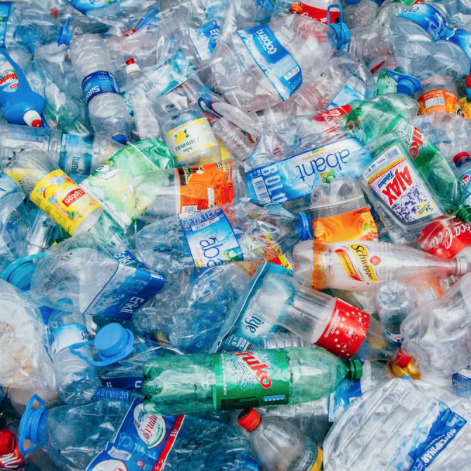
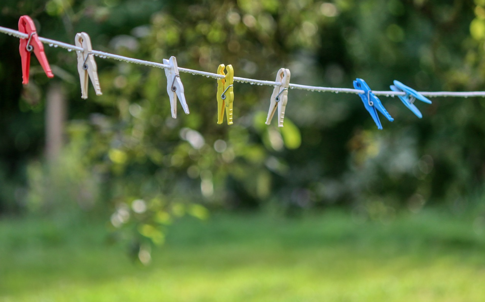

Why we should practice sustainability at home
Here are some easy at home practices
Reduce and reuse!
In general, think before you buy any product - do you really need it? How did the production of this product impact the environment and what further impacts will there be with the disposal of the product (and associated packaging materials)? Buying used products (except food) is smart because then as a consumer you are stopping the production of new products so not using resorces. I like to say the most sustainable clothing or equipment is already here! So buy used cars, buy used clothes, get old toys and video games from family and friends that don't have a need for them anymore! Buy doing this you will also save money. When it comes to buying food don't buy food that is in styrofoam or plastic wrap. Ask your deli if they can wrap the meat in paper or see if you can bring your own container to pack it in! Some resturants will also let you bring your own to-go container like chipotle! Its all about reducing and reusing good so we do not have to keep producing things where they are already here and could end up in a landfull!

Composting...it's easy!
Compost is organic material that can be added to soil to help plants grow. Food scraps and yard waste together currently make up more than 28 percent of what we throw away, and should be composted instead. Making compost keeps these materials out of landfills where they take up space and release methane, a potent greenhouse gas. You can compost a wide variety of things such as lawn waste (leaves, woodchips, weeds) and food waste so leftovers or rotten fruits and veggies. To compost you can either put it in a small container or set up a bigger tub in your backyard or any outdoor area. You want to start with a base of soil/dirt and throughout the days, weeks, ect you will add your compostable waste. Eventually you can use the composted dirt to plant things becuase the dirt will be really rich in nutrients. It is important to understand that composting allows you to safely get rid of waste instead of putting it in a landfill.
Other at home practices
Always be aware of what you can recycle and what you can not! Coffee cups or to-go cups from starbucks, McDonalds, Panera Bread, ect CAN NOT BE RECYCLED! I know it is confusing because they are made of paper, plastic, or both but because there was food in the cups it does not allow us to recycle them until they are rinsed out. Start buying things that are in glass or aluminum both of those materials are very usuable and welcomed at recycle centers! At home you can also stop using your clothes dryer and hang your clothes on clothes lines. Not only will this help energy consumption but it is also better for your clothes too! It stops the fading for color and any possible shrinkage in the dryer.
